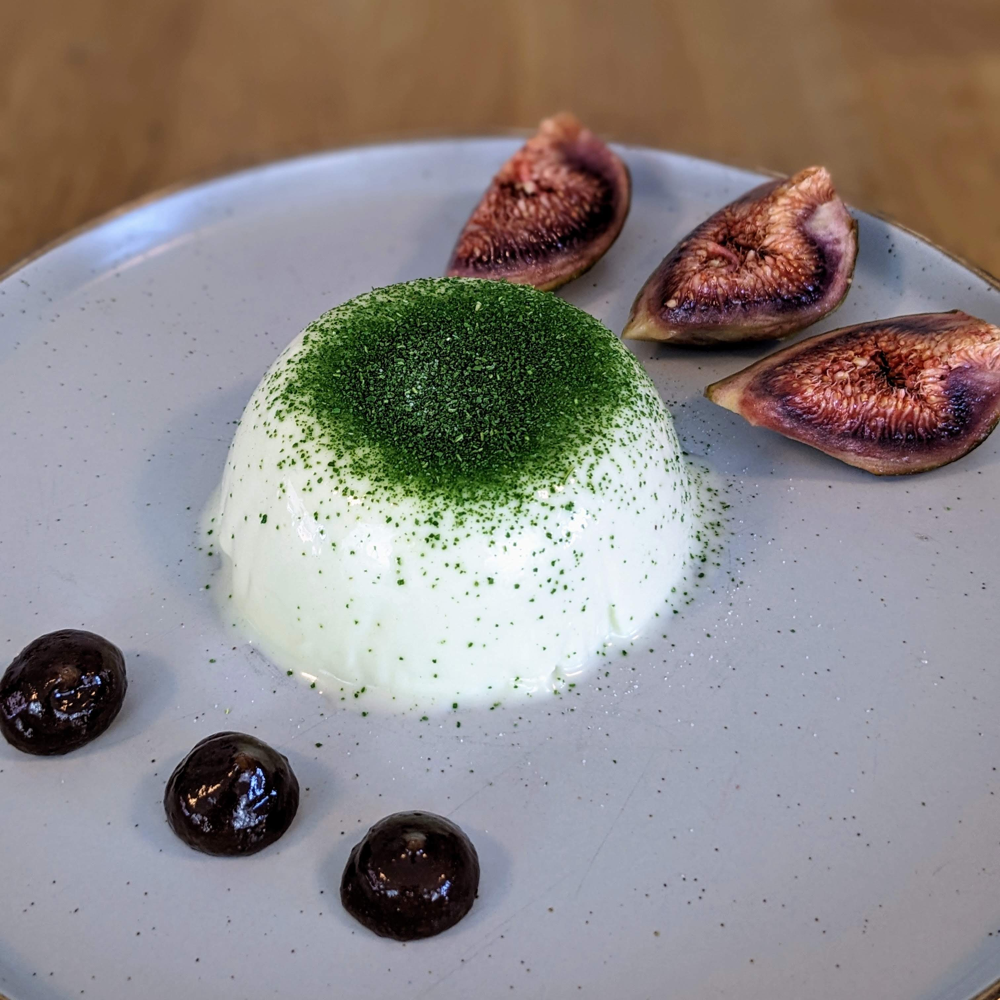

Home
Fig leaf and cardamom Panna cotta

Description
An interesting flavour combo using a unique ingredient, fig leaf is
similar in flavour to coconut
Ingredients
- milk
- cream
- caster sugar
- gelatine
- fig leaves
- cardamom pods
- figs
- honey
Method
-
Toast the fig leaves in the oven at 120c for 15 mins until crisp but
retaining their colour, set half of them aside for the powder
- Do some cooking!
-
To serve, turn the panna cottas onto a plate, pipe or bottle the fig
puree onto the plate, quater some fresh figs, and dust the panna cotta
with fig leaf powder in a seive